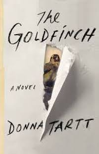

Max-Hugo Glasmacher
Kicking ass @Le Wagon
After 2 months of working as a waiter in a bar in Munich I decided to kick some ass 
See for yourself
|  |
The GoldfinchThe Goldfinch is the third novel by American author Donna Tartt. Published in 2013, it was Tartt's first novel since the publication of The Little Friend in 2002. |

|
Bohemian RhapsodyBohemian Rhapsody is a 2018 biographical film about the British rock band Queen. |
WhiplashWhiplash is a 2014 American drama film written and directed by Damien Chazelle. |